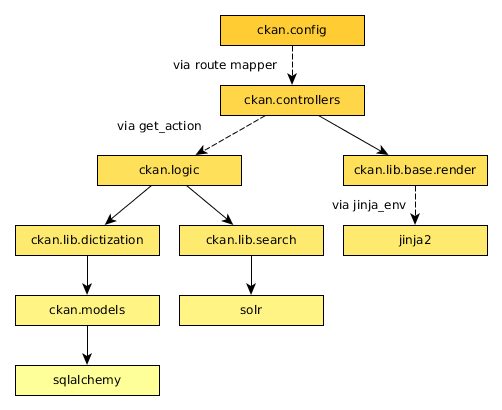

Python coding standards¶
For Python code style follow PEP 8 plus the guidelines below.
Some good links about Python code style:
- Guide to Python from Hitchhiker’s
- Google Python Style Guide
See also
- String internationalization
- How to mark strings for translation.
Use single quotes¶
Use single-quotes for string literals, e.g. 'my-identifier', but use double-quotes for strings that are likely to contain single-quote characters as part of the string itself (such as error messages, or any strings containing natural language), e.g. "You've got an error!".
Single-quotes are easier to read and to type, but if a string contains single-quote characters then double-quotes are better than escaping the single-quote characters or wrapping the string in double single-quotes.
We also use triple single-quotes for docstrings, see Docstrings.
Imports¶
Avoid creating circular imports by only importing modules more specialized than the one you are editing.
CKAN often uses code imported into a data structure instead of importing names directly. For example CKAN controllers only use get_action to access logic functions. This allows customization by CKAN plugins.
Don’t use from module import *. Instead list the names you need explicitly:
from module import name1, name2
Use parenthesis around the names if they are longer than one line:
from module import (name1, name2, ... name12, name13)Most of the current CKAN code base imports just the modules and then accesses names with module.name. This allows circular imports in some cases and may still be necessary for exsiting code, but is not recommended for new code.
Make all imports at the start of the file, after the module docstring. Imports should be grouped in the following order:
- Standard library imports
- Third-party imports
- CKAN imports
Logging¶
We use the Python standard library’s logging module to log messages in CKAN, e.g.:
import logging
...
logger = logging.getLogger(__name__)
...
logger.debug('some debug message')
When logging:
- Keep log messages short.
- Don’t include object representations in the log message. It is useful to include a domain model identifier where appropriate.
- Choose an appropriate log-level (DEBUG, INFO, ERROR, WARNING or CRITICAL, see Python’s Logging HOWTO).
String formatting¶
Don’t use the old %s style string formatting, e.g. "i am a %s" % sub. This kind of string formatting is not helpful for internationalization.
Use the new .format() method instead, and give meaningful names to each replacement field, for example:
_(' ... {foo} ... {bar} ...').format(foo='foo-value', bar='bar-value')
Unicode handling¶
CKAN strives to only use Unicode internally (via the unicode type) and to convert to/from ASCII at the interface to other systems and libraries if necessary.
See also
- Unicode handling
- Details on Unicode handling in CKAN
Docstrings¶
We want CKAN’s docstrings to be clear and easy to read for programmers who are smart and competent but who may not know a lot of CKAN technical jargon and whose first language may not be English. We also want it to be easy to maintain the docstrings and keep them up to date with the actual behaviour of the code as it changes over time. So:
- All modules and all public functions, classes and methods exported by a module should normally have docstrings (see PEP 257).
- Keep docstrings short, describe only what’s necessary and no more.
- Keep docstrings simple: use plain, concise English.
- Try to avoid repetition.
PEP 257 (Docstring Conventions)¶
Generally, follow PEP 257 for docstrings. We’ll only describe the ways that CKAN differs from or extends PEP 257 below.
CKAN docstrings deviate from PEP 257 in a couple of ways:
- We use '''triple single quotes''' around docstrings, not """triple double quotes""" (put triple single quotes around one-line docstrings as well as multi-line ones, it makes them easier to expand later)
- We use Sphinx domain object cross-references to cross-reference to other code objects (see below)
- We use Sphinx directives for documenting parameters, exceptions and return values (see below)
Referencing other code objects with :py:¶
If you want to refer to another Python or JavaScript module, function or class etc. in a docstring (or from a .rst file), use Sphinx domain object cross-references, for example:
See :py:mod:`ckan.lib.helpers`.
See :py:func:`ckan.logic.action.create.package_create`.
See :py:class:`ckan.logic.NotFound`.
For the full list of types of cross-reference, see the Sphinx docs.
Note
These kinds of cross-references can also be used to reference other types of object besides Python objects, for example JavaScript objects or even command-line scripts and options and environment variables. See the Sphinx docs for the full details.
Cross-referencing objects like this means that Sphinx will style the reference with the right CSS, and hyperlink the reference to the docs for the referenced object. Sphinx can also generate error messages when non-existent objects are referenced, which helps to keep the docs up to date as the code changes.
Tip
Sphinx will render a cross-reference like :py:func:`ckan.logic.action.create.package_create` as the full name of the function: ckan.logic.action.create.package_create(). If you want the docs to contain only the local name of the function (e.g. just package_create()), put a ~ at the start:
:py:func:`~ckan.logic.action.create.package_create`
(But you should always use the fully qualified name in your docstring or *.rst file.)
Documenting exceptions raised with :raises¶
There are a few guidelines that CKAN code should follow regarding exceptions:
All public functions that CKAN exports for third-party code to use should document any exceptions they raise. See below for how to document exceptions raised.
For example the template helper functions in ckan.lib.helpers, anything imported into ckan.plugins.toolkit, and all of the action API functions defined in ckan.logic.action, should list exceptions raised in their docstrings.
This is because CKAN themes, extensions and API clients need to be able to call CKAN code without crashing, so they need to know what exceptions they should handle (and extension developers shouldn’t have to understand the CKAN core source code).
On the other hand, internal functions that are only used within CKAN shouldn’t list exceptions in their docstrings.
This is because it would be difficult to keep all the exception lists up to date with the actual code behaviour, so the docstrings would become more misleading than useful.
Code should only raise exceptions from within its allowed set.
Each module in CKAN has a set of zero or more exceptions, defined somewhere near the module, that code in that module is allowed to raise. For example ckan/logic/__init__.py defines a number of exception types for code in ckan/logic/ to use. CKAN code should never raise exceptions types defined elsewhere in CKAN, in third-party code or in the Python standard library.
All code should catch any exceptions raised by called functions, and either handle the exception, re-raise the exception (if it’s from the code’s set of allowed exception types), or wrap the exception in an allowed exception type and re-raise it.
This is to make it easy for a CKAN core developer to look at the source code of an internal function, scan it for the keyword raise, and see what types of exception the function may raise, so they know what exceptions they need to catch if they’re going to call the function. Developers shouldn’t have to read the source of all the functions that a function calls (and the functions they call...) to find out what exceptions they needs to catch to call a function without crashing.
Todo
Insert examples of how to re-raise and how to wrap-and-re-raise an exception.
Use :raises: to document exceptions raised by public functions. The docstring should say what type of exception is raised and under what conditions. Use :py:class: to reference exception types. For example:
def member_list(context, data_dict=None):
'''Return the members of a group.
... (parameters and return values documented here) ...
:raises: :py:class:`ckan.logic.NotFound`: if the group doesn't exist
'''
Sphinx field lists¶
Use Sphinx field lists for documenting the parameters, exceptions and returns of functions:
- Use :param and :type to describe each parameter
- Use :returns and :rtype to describe each return
- Use :raises to describe each exception raised
Example of a short docstring:
@property
def packages(self):
'''Return a list of all packages that have this tag, sorted by name.
:rtype: list of ckan.model.package.Package objects
'''
Example of a longer docstring:
@classmethod
def search_by_name(cls, search_term, vocab_id_or_name=None):
'''Return all tags whose names contain a given string.
By default only free tags (tags which do not belong to any vocabulary)
are returned. If the optional argument ``vocab_id_or_name`` is given
then only tags from that vocabulary are returned.
:param search_term: the string to search for in the tag names
:type search_term: string
:param vocab_id_or_name: the id or name of the vocabulary to look in
(optional, default: None)
:type vocab_id_or_name: string
:returns: a list of tags that match the search term
:rtype: list of ckan.model.tag.Tag objects
'''
The phrases that follow :param foo:, :type foo:, or :returns: should not start with capital letters or end with full stops. These should be short phrases and not full sentences. If more detail is required put it in the function description instead.
Indicate optional arguments by ending their descriptions with (optional) in brackets. Where relevant also indicate the default value: (optional, default: 5).
You can also use a little inline reStructuredText markup in docstrings, e.g. *stars for emphasis* or ``double-backticks for literal text``
Action API docstrings¶
Docstrings from CKAN’s action API are processed with autodoc and included in the API chapter of CKAN’s documentation. The intended audience of these docstrings is users of the CKAN API and not (just) CKAN core developers.
In the Python source each API function has the same two arguments (context and data_dict), but the docstrings should document the keys that the functions read from data_dict and not context and data_dict themselves, as this is what the user has to POST in the JSON dict when calling the API.
Where practical, it’s helpful to give examples of param and return values in API docstrings.
CKAN datasets used to be called packages and the old name still appears in the source, e.g. in function names like package_list(). When documenting functions like this write dataset not package, but the first time you do this put package after it in brackets to avoid any confusion, e.g.
def package_show(context, data_dict):
'''Return the metadata of a dataset (package) and its resources.
Example of a ckan.logic.action API docstring:
def vocabulary_create(context, data_dict):
'''Create a new tag vocabulary.
You must be a sysadmin to create vocabularies.
:param name: the name of the new vocabulary, e.g. ``'Genre'``
:type name: string
:param tags: the new tags to add to the new vocabulary, for the format of
tag dictionaries see ``tag_create()``
:type tags: list of tag dictionaries
:returns: the newly-created vocabulary
:rtype: dictionary
'''
Some helpful tools for Python code quality¶
There are various tools that can help you to check your Python code for PEP8 conformance and general code quality. We recommend using them.
- pep8 checks your Python code against some of the style conventions in PEP 8. As mentioned above, only perform style clean-ups on master to help avoid spurious merge conflicts.
- pylint analyzes Python source code looking for bugs and signs of poor quality.
- pyflakes also analyzes Python programs to detect errors.
- flake8 combines both pep8 and pyflakes into a single tool.
- Syntastic is a Vim plugin with support for flake8, pyflakes and pylint.